Installation
Navigate to Edit->Plugins.
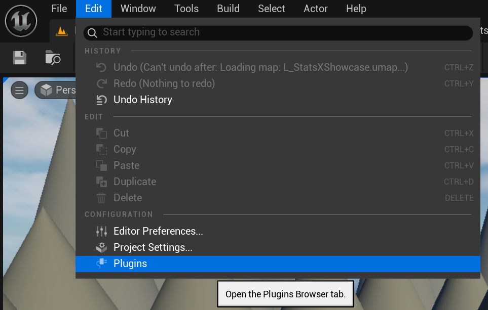Search "Stats_X" and activate Stats_X Plugin.
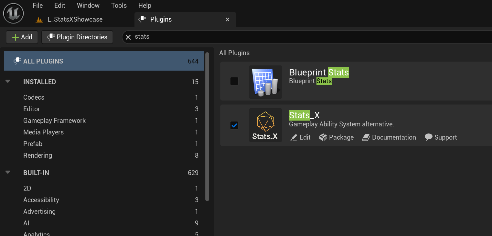Restart Unreal Engine.
In the Content Browser navigate to "/All/Plugins/Stats_X" this is the Content folder of this plugin.
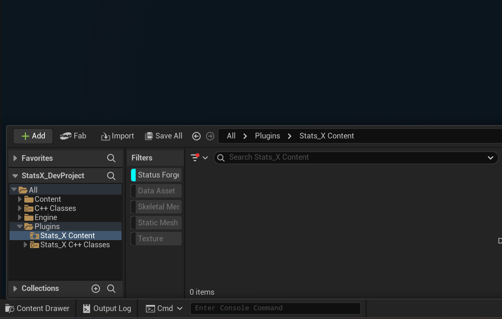Now from here, create a New Data Asset.
Right Click on the content folder. Search in the search bar above "Data Asset" and click on it.
On the menu that opens, search "PDA_ImmutableGameStatuses". Select it and click on it.
Name it precisely "DA_ImmutableGameStatuses".
Add Stats_X folder to the "Additional Assets Directories to Cook"
You are done, the plugin is installed correctly!
Setup Attributes
What is an Attribute?
An attribute is just a struct containing 3 floats, it is up to you to choose what these values
represent.
By default an attribute is automatically clamped internally e.g. Current value is clamped
between 0 and Max
value. You can disable all the default clamping by setting the boolean bOverflows to true.
Create the Stats Component
We are going to create a master first and children for the scope.
Creating the Master Stats
Navigate to the content folder of your project, not the content folder of the plugin.
Right click on the content browser and select "Blueprint Class".
On the menu that opens, search "StatsX_StatsComponentBase" and select it.
Rename it "BPC_StatsMaster"
Creating the Child Stats
Right click on "BPC_StatsMaster" asset we created and select "Create Child Blueprint Class"
Rename this new asset "BPC_CharacterStats"
Assign the Component to the Character
Since Stats_X is not invasive, you can use whatever character you want.
Open your Character Blueprint
Open the character you chose to use.
Add the Stats Component
On the Components window, top left by default, click Add.
Search "BPC_CharacterStats" or how you called it and select it.
Now your character has the StatsX component, this does nothing by itself and the tick is disabled.
Setup some Attributes
Now we can finally start to work with Stats_X.
Setup the Component
Open "BPC_StatsMaster". Remove all the default events in the graph except for "Begin Play" event.
Create a custom event and name it "Server_InitializeAttributes" and set it to RunOnServer.
Setup our Attributes
Open "BPC_CharacterStats", in the functions tab click Override and search for "Server_InitializeAttributes" and click it.
Now we are going to setup our attributes.
You want probably define your attributes in a data table or a data asset, but for this tutorial, to see how things happen we will do things manually in a boring way😁
In the "Server_InitializeAttributes" event, add a sequence Node
In the branch "Then0" search and add "InitializeStatAttribute"
In the parameter field "AttributeTag" click and select the Level tag (Refer to "Setup Gameplay Tags" section)
Leave the parameter Value and BaseValue to 0 since our first level will be 0.
Now, next to "InitializeStatAttribute" drag and type "InitializeResourceAttribute"
In the parameter field "AttributeTag" click and select the Experience tag
Leave the parameter CurrentValue and MaxValue to 0 since we wanna start with no experience. But set the BaseValue to 100. This will be a parameter for the calculation formula you will see later.
Now that you seen the two main functions to initialize Stat and Resources Attributes, copy the following table.
| Sequence Branch | Attribute Type | Attribute Tag | Attribute Value |
|---|---|---|---|
| Then 0 |
Stat
Resource Resource Resource |
Level
Experience AttributePoints ExpReward |
0, 0
0, 0, 100 8, 1000, 0 0, 1000, 0 |
| Then 1 |
Stat
Stat Stat |
Strength
Dexterity Intelligence |
0, 0
0, 0 0, 0 |
| Then 2 |
Stat
Stat Stat Stat Stat Stat |
CooldownReduction
CriticalChance CriticalDamage Haste MovementSpeed SpellPower |
1, 1
0, 0 1, 1 1, 1 500, 500 1, 1 |
| Then 3 | Stat | Resistance.Arcane | 0, 0 |
| Then 4 | Resource | Stack.Poison | 0, 10, 0 |
| Then 5 |
Resource
Resource Resource |
Health
Mana Stamina |
100, 100, 100
100, 100, 100 100, 100, 100 |
| Then 6 |
Resource
Stat |
Complementary.ComboCount
Complementary.BaseAttackSave |
0, 2, 0
0, 0 |
Write the BeginPlay
Now we need to call this event we created
In "BPC_CharacterStats" BeginPlay event use "GetOwner", cast it to your character blueprint (or use an interface), promote the output value to a variable "CharRef"
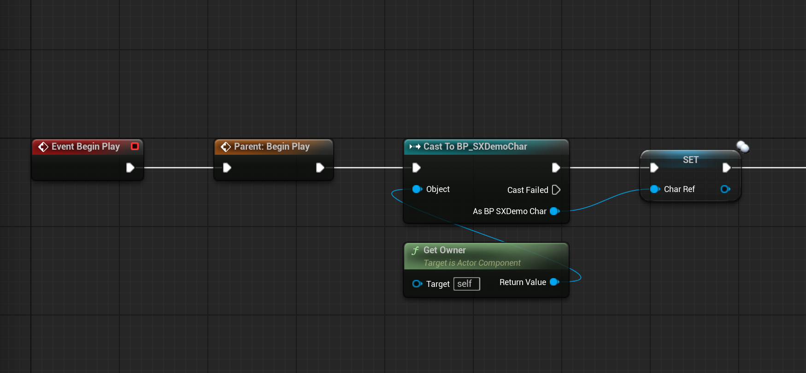Now branch the logic for Server and Client. Drag and search for "SwitchHasAuthority".
In the Authority Branch call the Dispatcher node "OnAttributeChanged" and next to it the node "Server_InitializeAttributes" we created before.
In the Client Branch call the Dispatcher node "OnAttributeChanged", nothing more.
From the event input pin of those dispatcher drag and search "CreateEvent"
In the Create Event node we want to choose, from the dropdown parameter, "[Create a matching event]"
Rename the event created for the authority branch to "OnAttributeChanged_ServerEvent"
Rename the event created for the client branch to "OnAttributeChanged_ClientEvent"
Now you have a separated logic for server and client for when an attribute changes, we will use these events indeed multicasts
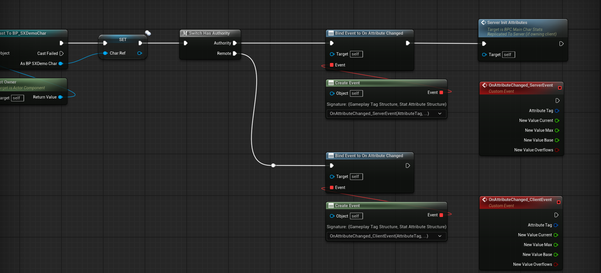Multicast the Movement Speed
Movement Speed is the only attribute we see from the start of the game.
So lets complete it now.
Both on the server side event and the client side event "OnAttributeChanged_ServerEvent" and "OnAttributeChanged_ClientEvent", drag the execution pin and call the node "Switch on Tag List" (this node is just a quality of life node, if you prefer use the standard switch on tag do it)
From the datail panel of the switch node, select the MovementSpeed tag and check the boolean ExactMatch.
From MovementSpeed branch, drag and set the character max speed as the Event input parameter "NewValue.Max"
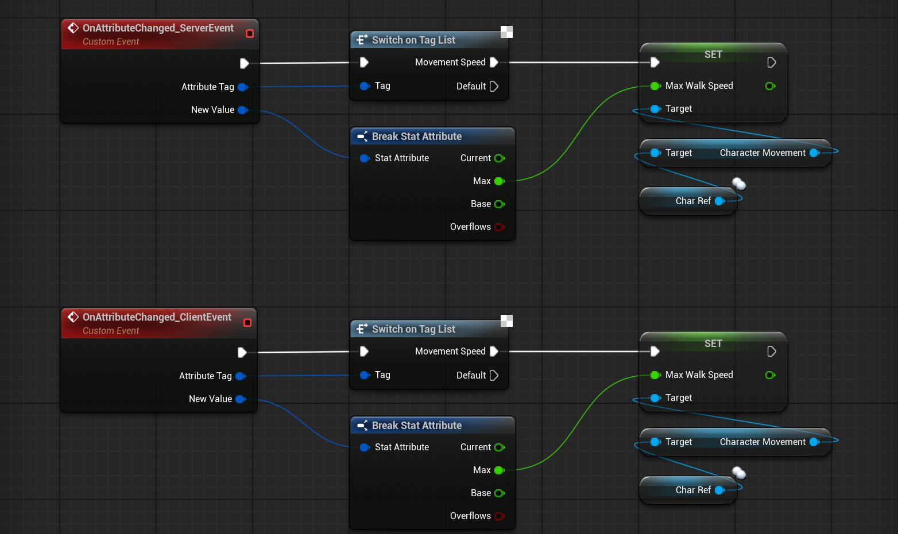Attributes are ready both on server and client!
UI Setup
For the UI you may prefer to use "OnAttributeChanged_ClientEvent" -> player controller -> HUD blueprint -> call an event that take as inputs the "OnAttributeChanged_ClientEvent" parameters, or, from the UI GetControlledPawn -> GetComponentByClass(StatsX_StatsComponentBase) -> BindEventTo(OnAttributeChanged) -> Assign the new values to the text and numeric UI widget. If you use the second method remember to call manually "OnAttributeChanged" after bind it.
Thresholds
Define a Threshold
- Open our "BPC_CharacterStats" blueprint
- Create a custom event and rename it "Server_InitializeThresholds". Set replication to RunOnServer.
- As first node you may want to use "AddAttributeThreshold"
- From the Threshold struct input pin, drag and search "Make Attribute Threshold"
- Compile the struct in this make node as follows
- In the BeginPlay event, after the InitializeAttributes call, call the "Server_InitializeThresholds" event
- Next to it, drag and search "BindEventToOnAttributeThresholdReached"
- From the red Event input pin, drag and select "CreateEvent"
- Choose as signature "[Create a matching event]"
- Rename the new event to "OnAttributeThresholdReached_ServerEvent" 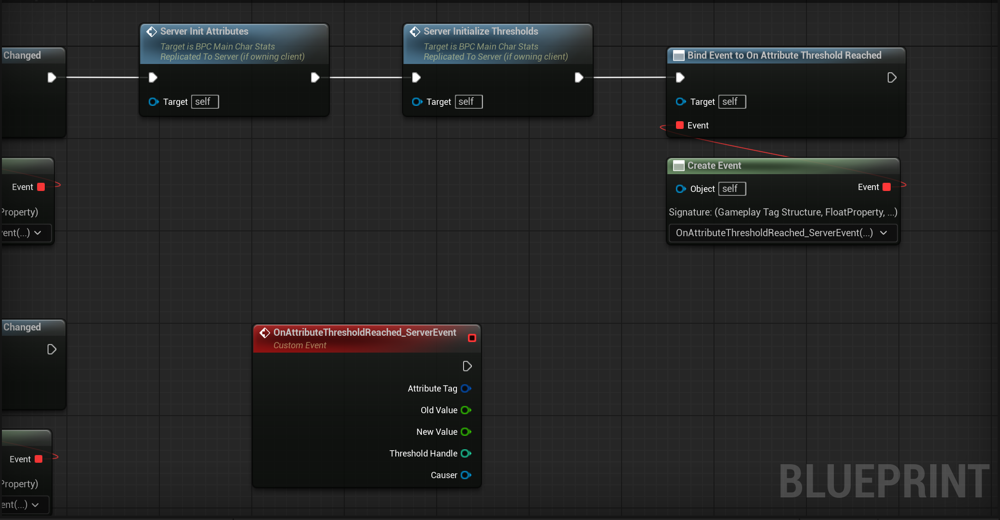
| Parameter Name | Parameter Value |
|---|---|
| AttributeTag | Health |
| SubAttributeTag | Current |
| ThresholdValue | 0 |
| Comparison | Crossing Below |
| RemoveAfterTrigger | False |
The Thresholds are ready! From this dispatcher event you can filter the triggering Threshold by AttributeTag or by Handle (if you stored them and their meaning in a map/array).
Modifiers
What is a Modifier?
A Modifier is a structure that interact directly with an attribute.
Imagine having 500 movement speed...
Then an enemy slows you down by 300 movement speed points.
Now, your movement speed is 200 (500 - 300).
While you have this debuff you start walking on the snow, that slows you down by 400 movement
speed points.
Now, your movement speed is 0 (200 - 400 auto clamped to 0).
Till now is all correct, but when the enemy debuff ends it add to you back 300 movement speed
points.
Now, your movement speed is 300 (0 + 300).
Then you exit the snow area, it gives you back 400 movement speed points.
Now, your movement speed is 700 (300 + 400). This is an error, you end up with more movement
speed than you started with and save/give back only the real value subtracted is not a solution.
A modifier solves this problem and open the door to many control features.
In the example before, the situation with modifiers is this:
Movement Speed Base Value = 500; Max value = (BaseValue + AdditiveMod) * multiplicativeMod
Enemy debuff: AdditiveMod = -300; multiplicativeMod = 1
New MaxValue = (500 + (-300)) * 1 = 200
Snow debuff: AdditiveMod = -400; multiplicativeMod = 1
New MaxValue = (500 + (-700)) * 1 = -200 = 0 clamped
When the enemy debuff ends: New MaxValue = (500 + (-400)) * 1 = 100
When the snow debuff ends: New MaxValue = (500 + 0) * 1 = 500
Create a Modifier without the Status Forge
You can, but the most cool feature of Stats_X is the status forge, it makes all your logic connected to one single framework where you can use interceptors on!
Handle modifiers only on the server side, they are replicated internally.
To create a modifier without the status forge, you can simply use the node AddModifier you find in a StatsComponent as the following example:
| Parameter Name | Parameter Value |
|---|---|
| AttributeTag (Only the Max Value need modifiers) | Health |
| SourceTag (This param is used to identify the source of the modifier, it can be anything you want, useful for things like "remove all Fire Debuffs") | Debuff.Arcane |
| OwnerID (This is the ID of who created it. Is handled automatically in the Status Forge) | 0 |
| AdditiveValue | -400 |
| MultiplicativeValue (You can use both additive and multiplicative in the same Modifier. 0,7 means -30%. 1,3 means +30%) | 1 |
To Remove a modifier in blueprints you can use the following nodes, while other nodes you see are utility for specific logic you may want in your project:
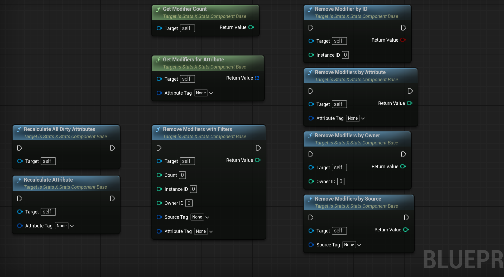Status Forge
What is the Status Forge?
The Status Forge let you create complex Data Assets in a Blueprint-like way
Every node is a CPU instruction handled in a bytecode-like style.
What is a Status?
A Status is defined into a data asset and is an array of Instructions
A status is "Something that happens", it could be:
- A Spell or Skill — active or passive
- An action in the world — open a door, server transfer, spawn an enemy, entering the boss
area
If you know GAS, a status, is a GameplayAbility/GameplayEffect
How to create a Status Forge asset
To create a Status Forge asset, right click in the content browser, search for the category "XForge" then "StatsX" and select "StatusForge". Convention name is "SF_YourStatusName"
First look at the Status Forge interface
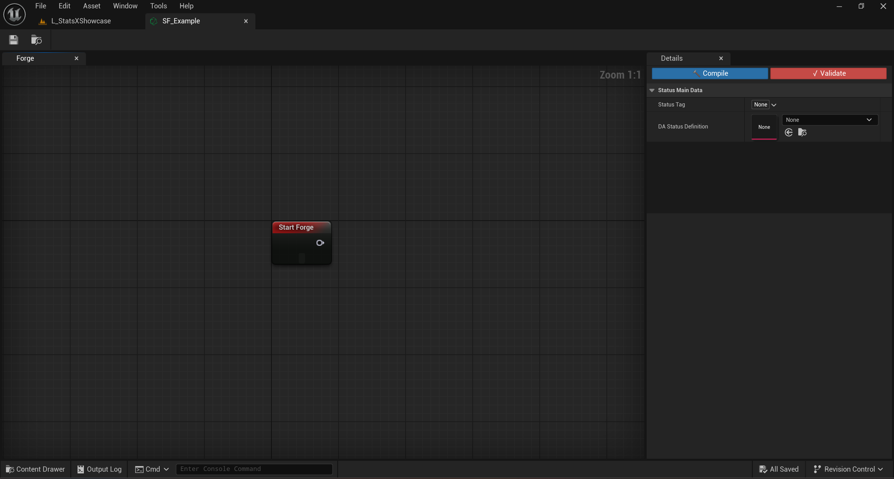The Graph
Here you can create your status logic with nodes. The first node is always "StartForge".
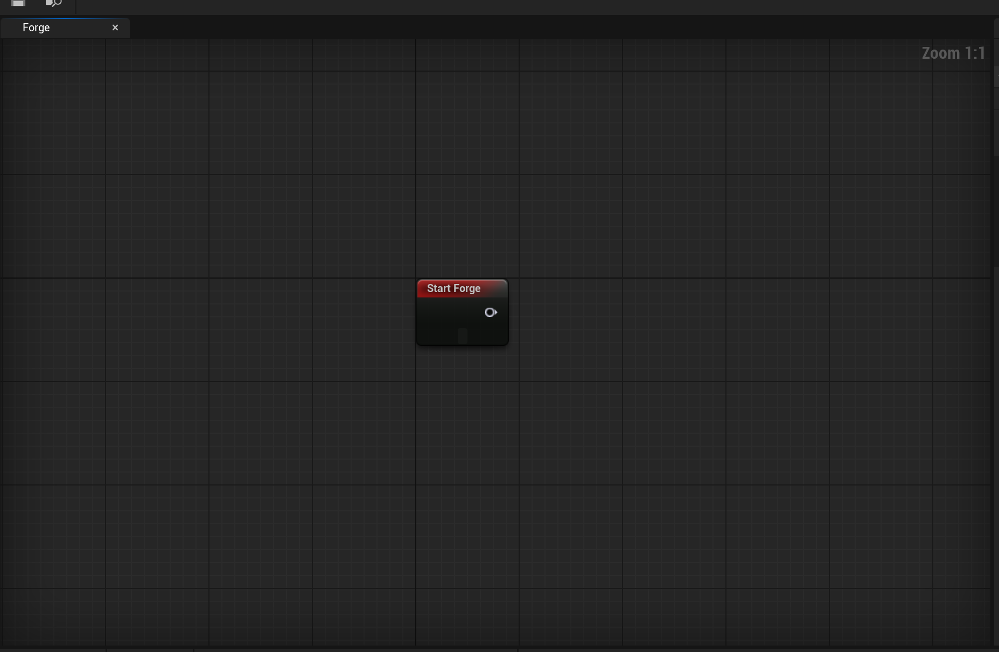Status Core Data
This is where you assign a GameplayTag to the status. When you want to cast this
status you will use this GameplayTag.
DA Status Definition is the compiled data asset, the output generated by this Status
Forge asset. You don't need to touch it, you will only if you make some error and
need delete the data asset.
Generation Buttons
Compile will generate the data asset with the instructions you put in the graph.
Automatically will assign this new data asset to the parameter "DA Status
Definition".
You could delete this Status Forge asset after the compilation, because it is just
an
Editor-Only asset that generates the runtime data asset, but you don't want to do
this because to update the data asset you will return here, do your modifications to
the graph and click "Compile" again.
The data asset generated is automatically inserted in the "DA_ImmutableGameStatuses"
we created in the Installation section of this tutorial. With the key "StatusTag"
and the value "DA_StatusDefinition" as soft reference. (You can have 10000 statuses
and data assets in your game they will not impact the RAM)
Node Details Panel
When you select a node in the graph, the details panel will show you the node
parameters.
Inside the node indeed are shown some concise information about the node and
parameters you defined for it.

Nodes
Every update will introduce new nodes.
Next update will introduce the node "Make Function", "Call Function", "Play
Montage", "Play VFX", "Play Sound" and more, that at the moment are handled thanks to Custom
Action, Custom Behavior and Custom Checks nodes.
Every node is documented, but come in the Discord to ask whatever.
Math Nodes
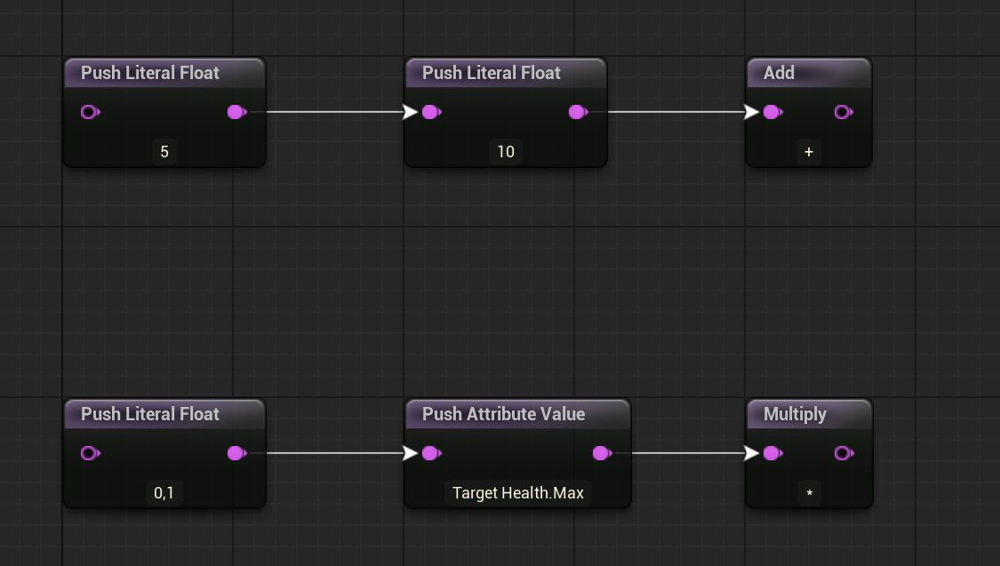Math nodes are subdivided in 3 types:
- Push Values, that push values into an array called "Calculation Stack"
- Operators, that perform operations on the values in the "Calculation Stack"
- A mix, like the Clamp node or the Power node, that do both the things
"Push Literal Float 5" -> "Push Literal Float 10" -> "+"
Is translated as "5 + 10" so the purple output pin of that + is equal to 15.
"Push Literal Float 0.1" -> "Push Attribute Value Target Health.Max" -> "*"
Is translated as "0.1 * Target.Health.Max" so if the max health of the target is 100 the purple
output pin of that * is equal to 10.
An operator (+-*/) will pop the last value in the Calculation Stack, performs his operation with
the current value, repeat the process till the stack is empty. Then it will push the result into
the Calculation Stack.
A Last-In-First-Out (LIFO) like system.
Status Lifecycle
Casting Status
To cast a Status you need to:
- Create a StatusForge asset
- Give it a GameplayTag identifier
- Compile it
- With the Stats Component of your actor call the function "CastStatus" (From the server if your project is multiplayer)
-
Set the CastStatus node parameter
- StatusTag: The GameplayTag identifier of the StatusForge asset
- CasterActor: The actor that is casting the status
- TargetActor: The actor that is receiving the status (can be equal to the Caster, it needs a Stats Component for 99% of the non-custom nodes)
- Payload: The payload to override values of the status (if any)
Life of a Status
A status can be One-Shot or Active.
A One-Shot status is similiar to a function, but not completly since can be paused.
A One-shot status is just casted and resolved, it could be a bullet projectile, a trigger,
anything that doesnt have an history and does not trigger in a second moment.
An Active status is casted and added to the Active Status Pool of the target StatsComponent. It
will stay here until it expires or until it is manually removed.
All statuses start as One-Shot, when the execution meets the node LoopBehavior or the node
UntilDeprecationBehavior the status will be added to the Active Status Pool of the target and
become active. Caster maintains a reference to the status casted (only an handle and the
target).
The Caster CastedActiveStatuses container and functions are completly Synchronized with the
Target ReceivedActiveStatuses container and functions.
Statuses are removed automatically when they expire.
When a status expires or is removed manually it will remove itself from the Active Status Pool
of the target and from
the Caster CastedActiveStatuses container.
It will remove automatically all the interceptors that status has registered.
Status Dispatchers
There are various dispatchers to help both the server and the client to know all the info about one status. (All dispatchers are Synchronized between server and client)
On Received Status Tag Changed
Called when a status is added to the ActiveStatusPool or when the last instance of
the status is removed from the ActiveStatusPool.
Example:
Actor A receives Burning. Dispatcher triggers with bAdded=true.
Actor A expires Burning. Dispatcher triggers with bAdded=false.
Actor A receives another Burning. Dispatcher triggers with bAdded=true.
Actor A receives another Burning (Burnings count 2). Dispatcher triggers with
bAdded=true.
Actor A expires Burning (Burnings count 1). Dispatcher DOES NOT trigger.
Actor A expires Burning (Burnings count 0). Dispatcher triggers with bAdded=false.
On Casted Status Tag Changed
Called when a status is added to the CastedActiveStatuses or when the last instance
of
the status is removed from the CastedActiveStatuses.
Example:
Actor A casts Burning. Dispatcher triggers with bAdded=true.
Actor A expires Burning. Dispatcher triggers with bAdded=false.
Actor A casts another Burning. Dispatcher triggers with bAdded=true.
Actor A casts another Burning (Burnings count 2). Dispatcher triggers with
bAdded=true.
Actor A expires Burning (Burnings count 1). Dispatcher DOES NOT trigger.
Actor A expires Burning (Burnings count 0). Dispatcher triggers with bAdded=false.
On Status Instance Changed
Client UI Utility Dispatcher.
Called when a status instance is added or removed to the ActiveStatusPool. The
handle parameter is what client need to retrieve all the status infos.
Example:
Actor A casts Burning. Dispatcher triggers with bAdded=true.
Actor A expires Burning. Dispatcher triggers with bAdded=false.
Actor A casts another Burning. Dispatcher triggers with bAdded=true.
Actor A casts another Burning (Burnings count 2). Dispatcher triggers with
bAdded=true.
Actor A expires Burning (Burnings count 1). Dispatcher triggers with bAdded=false.
Actor A expires Burning (Burnings count 0). Dispatcher triggers with bAdded=false.
On Status Instance Updated
Client UI Utility Dispatcher.
Called when a status instance is updated, for example when you modify a status
Accumulated time or max duration then this dispatcher triggers to warn clients about
this modify.
This because Stats_X is event driven. Only changes are replicated, clients want to
calculate the time for themselves and not to receive every frame a network call from
the server with the updated time.
StatsComponent has some utility functions to calculate the time with the info
retrieved from the dispatcher:
Payload
What is a Payload?
A payload is a way to override statuses values.
Since a status is a data-asset and during his execution instructions are not copyed but are
read directly, to parameterize the status we need to use a payload.
At the moment a payload can contain an integer, a float and a GameplayTag.
It is possible to use payloads to:
- Override values of the status — e.g. indeed create a status to add 1 Attribute Point when the player level up, another one that add 2 Attribute Points when a quest is completed, another one that removes 1 Attribute Point when a player die — it is possible have one status only where the Attribute Point delta is inside the payload.
- Remap GameplayTags of the status — e.g. a status can have inside itself a node ModifyAttribute that by default modify the Health Attribute. With a payload it is possible to remap Attribute.Health with another one like as Attribute.Stamina.
Add parameters to a StatusForge asset
To push a numeric parameter on the Calculation Stack you can use PushPayloadValue node

To Remap a gameplay Tag you don't need to add anything to the graph.
If your node must be executed no matter if there is a payload or not, then, you want to use
valid tags for instance a valid attribute that has been initialized. So if it find an override
for that tag it will use that, if not it will use his already present valid tag.
Indeed, if your node must be executed only if a payload is present, then, you want to use a
placeholder, not valid, GameplayTag. Example Attribute.Placeholder.1.
This way when the node is executed it will see that you are trying to do things on unexisting
attribute and will skip the action going to the next node directly.
It is rare a status with more than 5 different remapped tags, in most cases you can create from
Attribute.Placeholder.1 to Attribute.Placeholder.5 and you are good to go, since these tags are
reusable everywhere.
How to create a payload?
To create a payload, before Cast the status, right click on the graph and select "Make Status Payload".
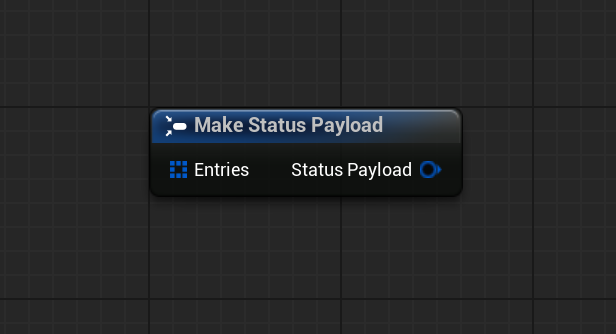Now we can call the payload shortcut functions with InjectFloat, InjectInt32, InjectRemap.
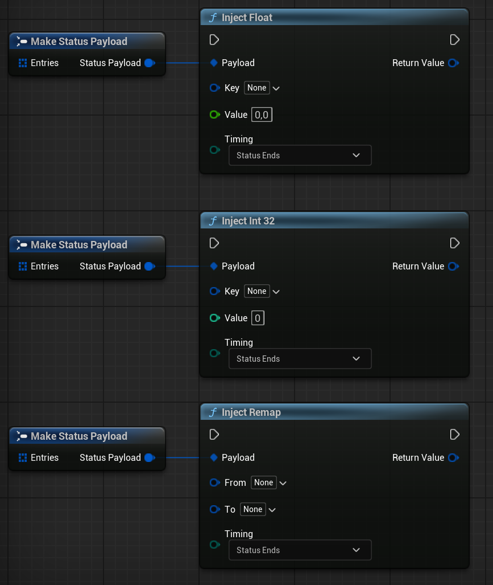
Timing parameter can be StatusEnds or InstructionEnds.
StatusEnds: That specific injection will be used until the end of the status.
InstructionEnds: That specific injection will be eliminated after use (last for all the duration
of the instruction who called it).
A payload is dynamic and can be modified at runtime by interceptors.
ApplyChildStatus node can inherit the payload from the parent status. So you can have one single
burning status and use payloads from the parent to set the burning power.
Fireball
How will Fireball work?
- The player will press an input button to cast the fireball.
- The system checks and pays the Fireball mana cost.
- A montage with notify will be played {note: Montage Node is not yet implemented in this version, we will use a custom action.}
- We spawn the projectile with the Fireball payload (Caster and status to apply on hit)
- The Fireball will damage the health of the target instantly.
- The Fireball will apply the Status Burning to the target.
Implementation
Create the Status Forge assets
Lets first create all the Status Forge assets we will use for the fireball.
- SF_FireballCast
- SF_FireballHit
- SF_Burning
- SF_FireballCD
Create Base Events
Inside the character create a multicast event for all Montages and a server event for all Casts
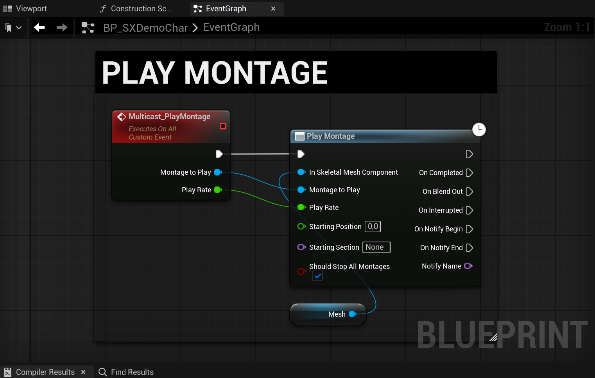 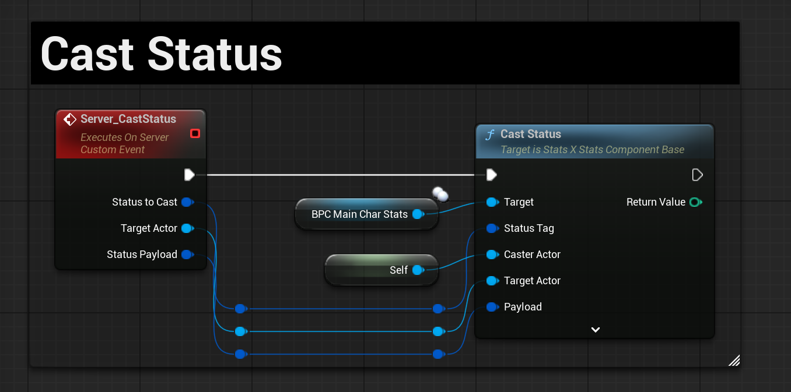Implement SF_FireballCast
The SF_FireballCast will be used to cast the fireball. It contains only the casting logic. Will be the projectile to apply effects
Implement the Custom Action to play the montage
While is not available a montage node, we will use a custom action to play the montage.
Assign the custom action created to the Custom Action node
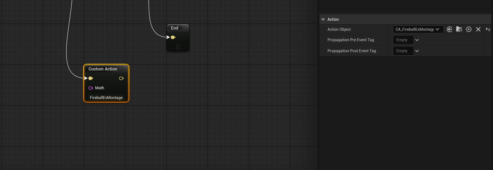Compile SF_FireballCast
Its the moment to compile the status.
Implement and compile SF_FireballHit, SF_FireballCD, SF_Burning
Implement the player input
Now we can implement the player input to cast the fireball.
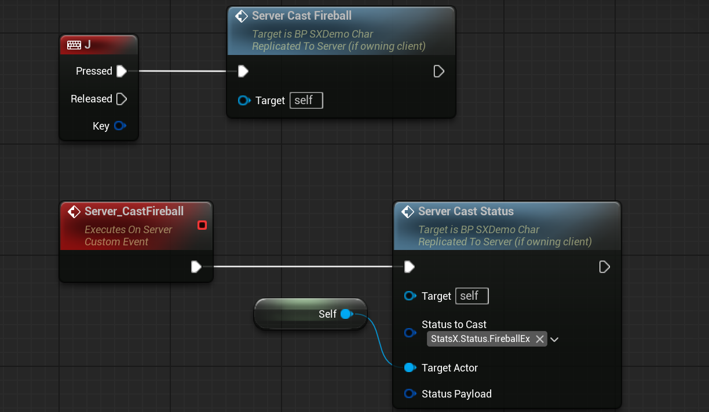Implement the projectile event
We will use a simple event to handle a simple projectile
Implement the Fireball Cast Notify
Create a new notify to your montage asset.
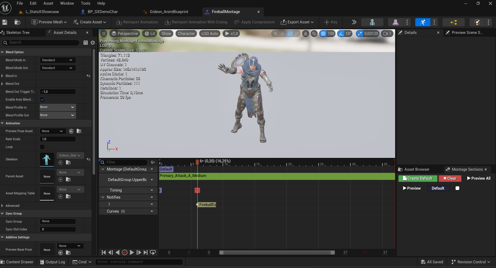Now we can implement the notify event in the animation blueprint.
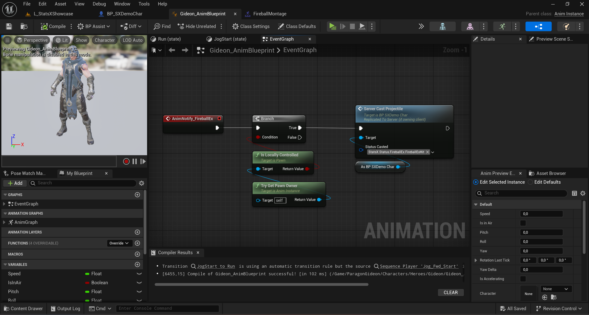Add to projectile Hit/Overlap event
When the projectile hits or overlaps you want to cast the status from the Caster to
the OtherActor Hit/Overlapped.
Caster, StatusToApply, TargetLocation are ExposeOnSpawn variables.

A simple Fireball is ready and replicated!
The one in the Demo project is castable during Base Attacks to continue the combo.
Mana Shield
How will Mana Shield work?
- Player press the input key
- The system checks and pays the mana cost
- Mana Shield applies an Interceptor to the caster
- While Mana Shield is active, when the caster takes damage to health, it will be redirected to the mana
Implementation
Create the two statuses we will use
Lets create SF_ManaShield and SF_DeltaToMana
Create the Interceptor
First create the blueprint interceptor and apply it to the Register Interceptor
node.
As Event To Bind On we want Pre.OnHealthDamaged
Now we want to open the Interceptor and implement the Condition, we want to check if the Delta is less than 0 so if it is a Damage.
Then we can implement the Action. Override the Action function with this.
This is what is happening:

Setup the player input
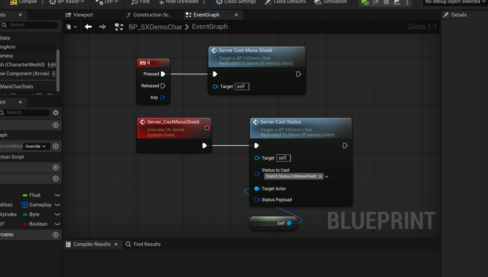
The Mana Shield is ready and replicated!
But will not work at the moment because we never
triggers the GameplayEvent the interceptor is binded to.
Modify the Fireball
We are not using OnHealthDamages but its better to create it in the same moment since every time you add things on the fly you have to update the old work.
Poison
How will Poison work?
- Poison will be applied by an actor called BP_PoisonGas
- When a player enters the PoisonGas area, it will receive the status Poison
- The status Poison increases, every 1 second, the Poison Stacks count by 1
- The status Poison deals 2 damages for every Poison Stack, every 0.5 seconds
- The status Poison last forever while the player is inside the PoisonGas area
- When the player leaves the PoisonGas area, the status Poison will last for 10 seconds
- When the player leaves the PoisonGas area, 1 stack of Poison is removed every second
Implementation
Create the BPC_EnvironmentStats blueprint
From the BPC_StatsMaster blueprint, right click on it and create a child class
called BPC_EnvironmentStats.
We can let this new blueprint empty for now because we are not going to implement
any stats for the Environment.
Create the BP_PoisonGas blueprint
Now create a new actor called BP_PoisonGas.
Add a spehere to trigger overlap events.
Set the actor to replicates = true.
Create the 3 Poison statuses we will use

Implement these 3 assets
Implement the BP_PoisonGas blueprint
With the help of an "Actor,Integer" map
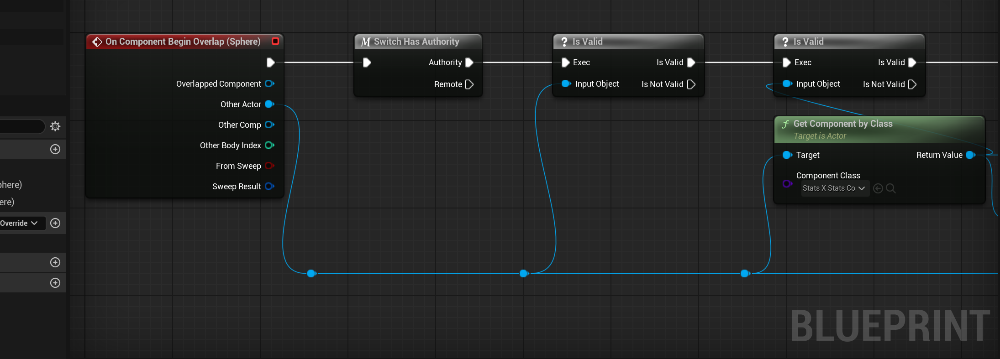 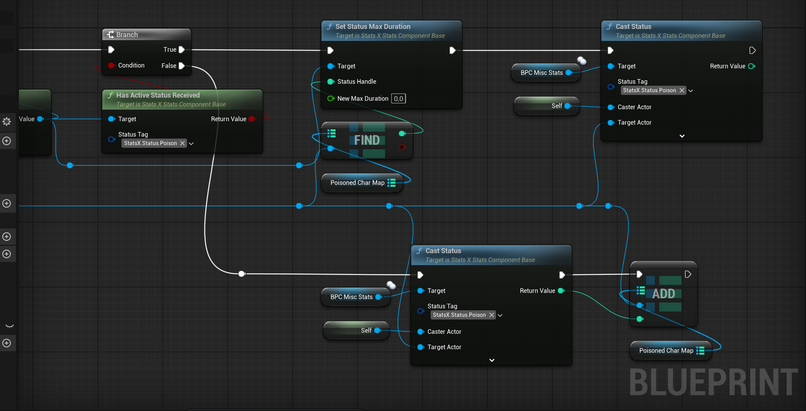 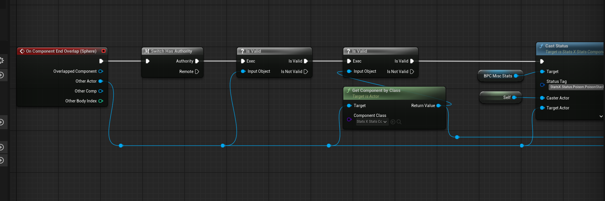 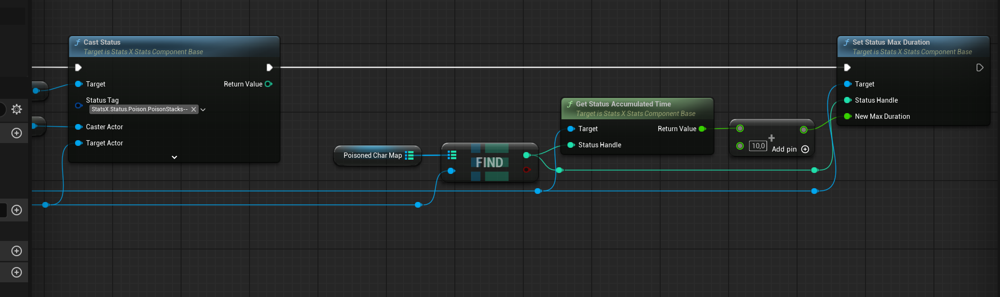Poison is ready and replicated!
Drag the actor into the scene and run through the PoisonGas area to test it.
Level Up
How will Level Up work?
- We will use the attribute ExpReward Current as experience the character is gaining.
- ExpReward Max, indeed, will be the experience the character give to the killer when it dies.
- So we create a status SF_LevelUp and a status SF_AddExp.
Implementation
Create SF_LevelUp
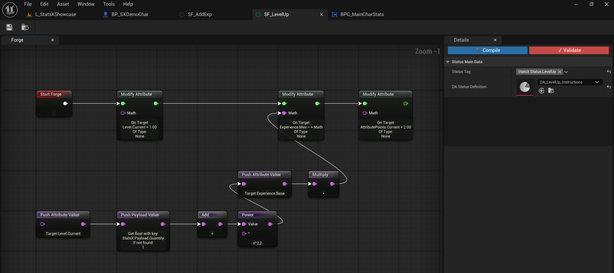
Create SF_AddExp
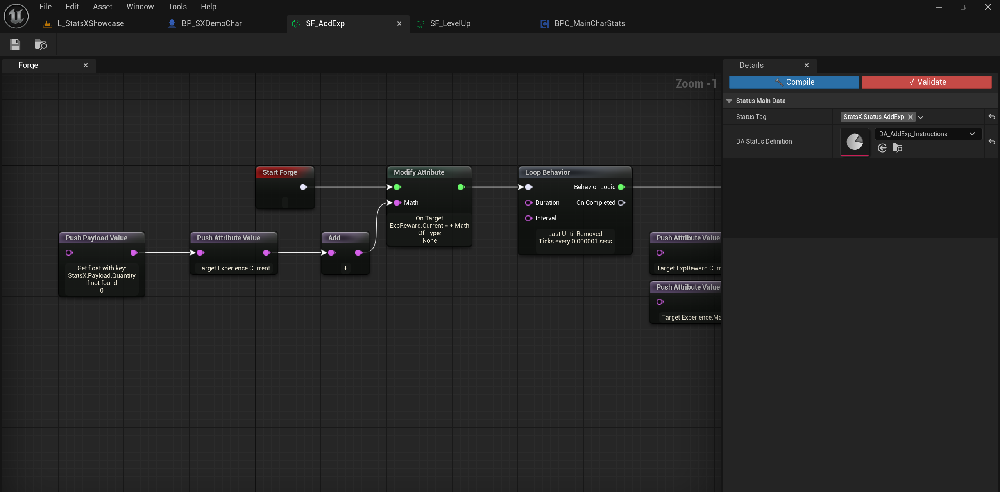
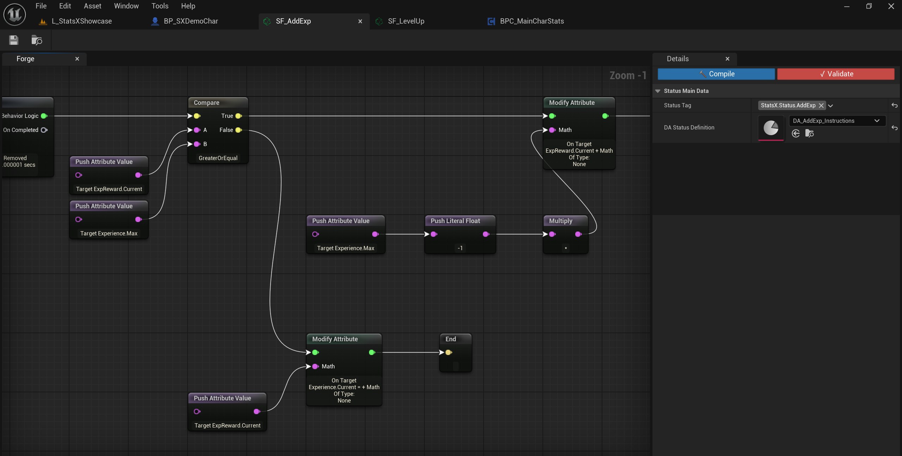

Level Up in the BeginPlay
In the character stats component, we created in the Setup Attributes section, we
need to modify the Server_InitializeAtributes event/function.
Cast the status LevelUp after all the attribute initializations, so it starts from
level 1.
Setup the Death Threshold
If you have not done it in the Threshold section, set up the threshold to trigger the death, then copy the event.
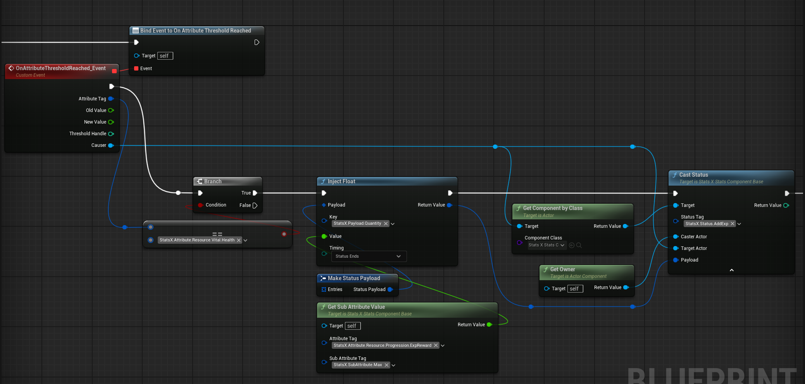